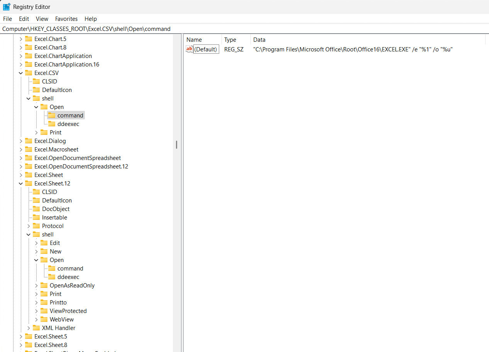

Excel Macro Set
Posted on 2024-05-20 in Code
Spreadsheets - A killer app since 1979
I'm no Excel expert, but nonetheless find myself working with the magical grid nearly every day. Very often for my line of work that entails reviewing log files for suspicious activity, finding patterns, and preparing reports based on what I find. after doing the same steps over and over, I finally dug in, assembled a set of macros, and figured out how to add them to the Excel ribbon menu for easy access.
My Excel Macro Ribbon Set
You can download the set of ExcelMacros on GitHub here and follow the included instructions for adding them to your Excel ribbon. Full installation and configuration information is in the readme, and here is a description of what each macro/button in the current version can do for you:
- Initialize CSV - Applies the next five macros in sequence - Handy for initializing a CSV log file for manual review.
- Auto Fit All Columns (50) - Auto-fits all column width with maximum with for each column of 50 characters.
- Auto Fit All Rows (50) - Auto-fits all row height with maximum height for each row of 50 characters.
- Add Filter - Adds filter to top row. I know this is easy enough to do with the Ctrl+Shift+L shortcut, but this fits in with the flow when using other related macros and the "Initialize CSV" above.
- Hide Empty Columns - Hides all columns which have data only in the first row (assumed to be the header row).
- Hide GUID Columns - Hide all columns which have a GUID in the second row (the first is assumed to be the header).
- Split Date And Time To New Columns - Use only if a column containing date-space-time is selected - Creates two new columns to the right, copies date into the first, and copies time into the second.
- Highlight Cells With Selected Value - Highlights all CELLS which contains the value in the currently selected cell. Can then use filter by color to limit view to highlighted entries.
- Highlight Rows With Selected Value - Highlights all ROWS that have a cell which contains the value in the currently selected cell. Separate macros for yellow/green/red highlighting included.
- Blank If Error - Surround formulas in all selected cells with =IFERROR(,"").
- Convert Selected To Values - Converts formulas in selected cells to values.
- Highlight Duplicate Values Selected Range - Highlights duplicate values in the selected range of cells.
- Save Worksheet As PDF - Saves current worksheet as a PDF of the same name in the same folder as the original without any further prompts.
- Save Worksheet As XLSX - Saves current worksheet as XLSX with same path & filename as the original open file. Handy when processing CSV files - faster than pressing F12 > clicking Drop-down menu > clicking XLSX > clicking Save.
- Clear All Highlighting - Clears all highlighting in the worksheet (in case highlighting went awry with previous macros).
- Unhide All Rows Columns - Un-hides all manually hidden columns (and rows, if no filters are applied).
- CustomSort - Brings up the custom sort dialog (saves a couple clicks).
- Delete Hidden Rows - Deletes all currently hidden rows.
- DeleteH idden Columns - Deletes all currently hidden columns.
Caveat Emptor: These macros are not particularly refined - no error handling, and some edge cases will cause them to fail - but they're good enough to save me a lot of time daily, so they're about as good as they're going to get for now.
Additional Excel tips
If you, like me, tend to have multiple spreadsheets open I recommend updating the Registry so that when opening a sheet/CSV by double-clicking it opens Excel in Embedded mode (prevents the default workbook Book.xltx from being created and startup screen from appearing) and opens each sheet/CSV in its own instance of the "Excel.exe" app so that if an operation (function, macro) is fully occupying one instance all of them are not frozen (you can go work on another sheet until the macro finishes).
The changes needed are at least updating "Excel.CSV" and "Excel.Sheet.12":
- HKEY_CLASSES_ROOT\Excel.Sheet.12\shell\Open\command to "\"C:\Program Files\Microsoft Office\Root\Office16\EXCEL.EXE\" /e \"%1\" /o \"%u\""
- HKEY_CLASSES_ROOT\Excel.CSV\shell\Open\command to "\"C:\Program Files\Microsoft Office\Root\Office16\EXCEL.EXE\" /e \"%1\" /o \"%u\""

Here are two REG files that can be imported to update these values:
Then go to %appdata%\Microsoft\Excel\XLSTART, right-click PERSONAL.XLSB and set the file attributes to read-only to prevent a "file in use" popup when multiple instances of Excel are started and each reads the macro file.
Walk on,
Bitpusher
\`._,'/
(_- -_)
\o/